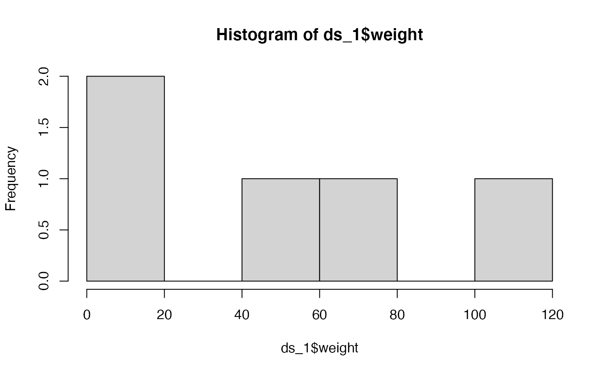

vignettes/workflow-read.Rmd
workflow-read.RmdThe REDCap API facilitates repetitive tasks. If you’re sure you’ll download and analyze a project only once, then it may make sense to avoid the API and instead download a CSV through the browser.
But that single-shot scenario almost never happens in my life:
Instead of telling your students or colleagues “first go to REDCap, then go to project 55, then click”Data Exports“, then click”Export Data“, then download these files, then move the files to this subdirectory, and finally convert them to this format before you run these models” …say it with a few lines of R code.
For people running your code on their machines …the API is so integrated and responsive that they may not even realize their computer is connecting to the outside world. If they’re not looking closely, they may think it’s a dataset that’s included locally in a package they’ve already installed.
For beginners, most of the work is related to passing security credentials …which is something that is a reality of working with PHI.
First confirm that the REDCapR package is installed on your local machine. If not, the following line will throw the error Loading required namespace: REDCapR. Failed with error: ‘there is no package called ‘REDCapR’’. If this call fails, follow the installation instructions on the REDCapR webpage.
requireNamespace("REDCapR")
#> Loading required namespace: REDCapR
# If this fails, run `install.packages("REDCapR")` or `remotes::install_github(repo="OuhscBbmc/REDCapR")`If you’re a workshop attendee, you can use this vignette to copy snippets of code to your local machine to follow along with the examples: https://ouhscbbmc.github.io/REDCapR/articles/workflow-read.html.
Check with your institution’s REDCap administrator to ensure you have
This might be the first time you’ve ever needed to request a token, and your institution may have a formal process for API approval. Your REDCap admin can help.
For this vignette, we’ll use a fake dataset hosted at https://bbmc.ouhsc.edu/redcap/api/ and accessible with the token “9A81268476645C4E5F03428B8AC3AA7B”.
Note to REDCap Admins:
For
REDCapR::redcap_read()to function properly, the user must have Export permissions for the ‘Full Data Set’. Users with only ‘De-Identified’ export privileges can still useREDCapR::redcap_read_oneshot(). To grant the appropriate permissions:
- go to ‘User Rights’ in the REDCap project site,
- select the desired user, and then select ‘Edit User Privileges’,
- in the ‘Data Exports’ radio buttons, select ‘Full Data Set’.
Before developing any REDCap or analysis code, spend at least 10 minutes to review the codebook, whose link is near the top left corner of the REDCap project page, under the “Project Home and Design” heading. Learning the details will save you time later and improve the quality of the research.
If you’re new to the project, meet with the investigator for at least 30 minutes to learn the context, collection process, and idiosyncrasies of the dataset. During that conversation, develop a plan for grooming the dataset to be ready for analysis. This is part of the standard advice that the analyst’s involvement should start early in the investigation’s life span.
The REDCap API token is essentially a combination of a personal password and the ID of the specific project you’re requesting data from. Protect it like any other password to PHI (protected health information). For a project with PHI, never hard-code the password directly in an R file. In other words, no PHI project should be accessed with an R file that includes the line
my_secret_token <- "9A81268476645C4E5F03428B8AC3AA7B"Instead, we suggest storing the token in a location that can be accessed by only you. We have two recommendations.
The basic goals are (a) separate the secret values from the R file into a dedicated file and (b) secure the dedicated file. If using a git repository, prevent the file from being committed with an entry in .gitignore. Ask your institution’s IT security team for their recommendation.
The retrieve_credential_local() function in the REDCapR package loads relevant information from a csv into R. The plain-text file might look like this:
redcap_uri,username,project_id,token,comment
"https://bbmc.ouhsc.edu/redcap/api/","myusername",153,9A81268476645C4E5F03428B8AC3AA7B,"simple"
"https://bbmc.ouhsc.edu/redcap/api/","myusername",212,0434F0E9CF53ED0587847AB6E51DE762,"longitudinal"
"https://bbmc.ouhsc.edu/redcap/api/","myusername",213,D70F9ACD1EDD6F151C6EA78683944E98,"write data"To retrieve the credentials for the first project listed above, pass the value of “153” to project_id.
path_credential <- system.file("misc/example.credentials", package = "REDCapR")
credential <- REDCapR::retrieve_credential_local(
path_credential = path_credential,
project_id = 153
)
credential
#> $redcap_uri
#> [1] "https://bbmc.ouhsc.edu/redcap/api/"
#>
#> $username
#> [1] "myusername"
#>
#> $project_id
#> [1] 153
#>
#> $token
#> [1] "9A81268476645C4E5F03428B8AC3AA7B"
#>
#> $comment
#> [1] "simple static (read-only) test project"A credential file is already created for this vignette. In your next real project, call create_credential_local() to start a well-formed csv file that can contain tokens.
Compared to the method below, this one is less secure but easier to establish.
Our preferred method involves saving the tokens in a separate database that uses something like Active Directory to authenticate requests. This method is described in detail in the Security Database vignette.
This approach realistically requires someone in your institution to have at least basic database administration experience.
The redcap_uri and token fields are the only required arguments of REDCapR::redcap_read(); both are in the credential object created in the previous section.
ds_1 <-
REDCapR::redcap_read(
redcap_uri = credential$redcap_uri,
token = credential$token
)$data
#> The data dictionary describing 17 fields was read from REDCap in 0.3 seconds. The http status code was 200.
#> 5 records and 1 columns were read from REDCap in 0.2 seconds. The http status code was 200.
#> Starting to read 5 records at 2021-11-08 03:00:33.
#> Reading batch 1 of 1, with subjects 1 through 5 (ie, 5 unique subject records).
#> 5 records and 25 columns were read from REDCap in 0.2 seconds. The http status code was 200.
#>
#> ── Column specification ────────────────────────────────────────────────────────
#> cols(
#> .default = col_double(),
#> name_first = col_character(),
#> name_last = col_character(),
#> address = col_character(),
#> telephone = col_character(),
#> email = col_character(),
#> dob = col_date(format = ""),
#> comments = col_character(),
#> mugshot = col_character()
#> )
#> ℹ Use `spec()` for the full column specifications.At this point, the data.frame ds_1 has everything you need to start analyzing the project.
ds_1
#> record_id name_first name_last address
#> 1 1 Nutmeg Nutmouse 14 Rose Cottage St.\nKenning UK, 323232
#> 2 2 Tumtum Nutmouse 14 Rose Cottage Blvd.\nKenning UK 34243
#> 3 3 Marcus Wood 243 Hill St.\nGuthrie OK 73402
#> 4 4 Trudy DAG 342 Elm\nDuncanville TX, 75116
#> 5 5 John Lee Walker Hotel Suite\nNew Orleans LA, 70115
#> telephone email dob age sex demographics_complete
#> 1 (405) 321-1111 nutty@mouse.com 2003-08-30 11 0 2
#> 2 (405) 321-2222 tummy@mouse.comm 2003-03-10 11 1 2
#> 3 (405) 321-3333 mw@mwood.net 1934-04-09 80 1 2
#> 4 (405) 321-4444 peroxide@blonde.com 1952-11-02 61 0 2
#> 5 (405) 321-5555 left@hippocket.com 1955-04-15 59 1 2
#> height weight bmi
#> 1 7.00 1 204.1
#> 2 6.00 1 277.8
#> 3 180.00 80 24.7
#> 4 165.00 54 19.8
#> 5 193.04 104 27.9
#> comments
#> 1 Character in a book, with some guessing
#> 2 A mouse character from a good book
#> 3 completely made up
#> 4 This record doesn't have a DAG assigned\n\nSo call up Trudy on the telephone\nSend her a letter in the mail
#> 5 Had a hand for trouble and a eye for cash\n\nHe had a gold watch chain and a black mustache
#> mugshot health_complete race___1 race___2 race___3 race___4 race___5
#> 1 mugshot-1.jpg 1 0 0 0 0 1
#> 2 mugshot-2.jpg 0 0 0 1 0 1
#> 3 mugshot-3.jpg 2 0 0 0 1 1
#> 4 mugshot-4.jpg 2 0 1 0 0 1
#> 5 mugshot-5.jpg 0 1 0 0 0 0
#> race___6 ethnicity interpreter_needed race_and_ethnicity_complete
#> 1 0 1 0 2
#> 2 0 1 0 0
#> 3 0 0 1 2
#> 4 0 1 NA 2
#> 5 1 2 0 2
hist(ds_1$weight)
summary(ds_1)
#> record_id name_first name_last address
#> Min. :1 Length:5 Length:5 Length:5
#> 1st Qu.:2 Class :character Class :character Class :character
#> Median :3 Mode :character Mode :character Mode :character
#> Mean :3
#> 3rd Qu.:4
#> Max. :5
#>
#> telephone email dob age
#> Length:5 Length:5 Min. :1934-04-09 Min. :11.0
#> Class :character Class :character 1st Qu.:1952-11-02 1st Qu.:11.0
#> Mode :character Mode :character Median :1955-04-15 Median :59.0
#> Mean :1969-11-06 Mean :44.4
#> 3rd Qu.:2003-03-10 3rd Qu.:61.0
#> Max. :2003-08-30 Max. :80.0
#>
#> sex demographics_complete height weight
#> Min. :0.0 Min. :2 Min. : 6.0 Min. : 1
#> 1st Qu.:0.0 1st Qu.:2 1st Qu.: 7.0 1st Qu.: 1
#> Median :1.0 Median :2 Median :165.0 Median : 54
#> Mean :0.6 Mean :2 Mean :110.2 Mean : 48
#> 3rd Qu.:1.0 3rd Qu.:2 3rd Qu.:180.0 3rd Qu.: 80
#> Max. :1.0 Max. :2 Max. :193.0 Max. :104
#>
#> bmi comments mugshot health_complete
#> Min. : 19.8 Length:5 Length:5 Min. :0
#> 1st Qu.: 24.7 Class :character Class :character 1st Qu.:0
#> Median : 27.9 Mode :character Mode :character Median :1
#> Mean :110.9 Mean :1
#> 3rd Qu.:204.1 3rd Qu.:2
#> Max. :277.8 Max. :2
#>
#> race___1 race___2 race___3 race___4 race___5
#> Min. :0.0 Min. :0.0 Min. :0.0 Min. :0.0 Min. :0.0
#> 1st Qu.:0.0 1st Qu.:0.0 1st Qu.:0.0 1st Qu.:0.0 1st Qu.:1.0
#> Median :0.0 Median :0.0 Median :0.0 Median :0.0 Median :1.0
#> Mean :0.2 Mean :0.2 Mean :0.2 Mean :0.2 Mean :0.8
#> 3rd Qu.:0.0 3rd Qu.:0.0 3rd Qu.:0.0 3rd Qu.:0.0 3rd Qu.:1.0
#> Max. :1.0 Max. :1.0 Max. :1.0 Max. :1.0 Max. :1.0
#>
#> race___6 ethnicity interpreter_needed race_and_ethnicity_complete
#> Min. :0.0 Min. :0 Min. :0.00 Min. :0.0
#> 1st Qu.:0.0 1st Qu.:1 1st Qu.:0.00 1st Qu.:2.0
#> Median :0.0 Median :1 Median :0.00 Median :2.0
#> Mean :0.2 Mean :1 Mean :0.25 Mean :1.6
#> 3rd Qu.:0.0 3rd Qu.:1 3rd Qu.:0.25 3rd Qu.:2.0
#> Max. :1.0 Max. :2 Max. :1.00 Max. :2.0
#> NA's :1
summary(lm(age ~ 1 + sex + bmi, data = ds_1))
#>
#> Call:
#> lm(formula = age ~ 1 + sex + bmi, data = ds_1)
#>
#> Residuals:
#> 1 2 3 4 5
#> -2.491 1.954 9.132 2.491 -11.086
#>
#> Coefficients:
#> Estimate Std. Error t value Pr(>|t|)
#> (Intercept) 63.34496 8.89980 7.118 0.0192 *
#> sex 13.55626 9.62958 1.408 0.2945
#> bmi -0.24426 0.04337 -5.632 0.0301 *
#> ---
#> Signif. codes: 0 '***' 0.001 '**' 0.01 '*' 0.05 '.' 0.1 ' ' 1
#>
#> Residual standard error: 10.55 on 2 degrees of freedom
#> Multiple R-squared: 0.9442, Adjusted R-squared: 0.8884
#> F-statistic: 16.92 on 2 and 2 DF, p-value: 0.05581Pause here in the workshop for a few minutes. Raise hand if you’re having trouble.
When you read a dataset for the first time, you probably haven’t decided which columns are needed so it makes sense to retrieve everything. As you gain familiarity with the data and with the analytic objectives, consider being more selective with the variables and rows transported from the remote server to your local machine.
Advantages include:
The most basic operation to limit rows is passing the exact record identifiers.
# Return only records with IDs of 1 and 4
desired_records <- c(1, 4)
REDCapR::redcap_read(
redcap_uri = credential$redcap_uri,
token = credential$token,
records = desired_records,
verbose = FALSE
)$data
#> Starting to read 2 records at 2021-11-08 03:00:34.
#>
#> ── Column specification ────────────────────────────────────────────────────────
#> cols(
#> .default = col_double(),
#> name_first = col_character(),
#> name_last = col_character(),
#> address = col_character(),
#> telephone = col_character(),
#> email = col_character(),
#> dob = col_date(format = ""),
#> comments = col_character(),
#> mugshot = col_character()
#> )
#> ℹ Use `spec()` for the full column specifications.
#> record_id name_first name_last address
#> 1 1 Nutmeg Nutmouse 14 Rose Cottage St.\nKenning UK, 323232
#> 2 4 Trudy DAG 342 Elm\nDuncanville TX, 75116
#> telephone email dob age sex demographics_complete
#> 1 (405) 321-1111 nutty@mouse.com 2003-08-30 11 0 2
#> 2 (405) 321-4444 peroxide@blonde.com 1952-11-02 61 0 2
#> height weight bmi
#> 1 7 1 204.1
#> 2 165 54 19.8
#> comments
#> 1 Character in a book, with some guessing
#> 2 This record doesn't have a DAG assigned\n\nSo call up Trudy on the telephone\nSend her a letter in the mail
#> mugshot health_complete race___1 race___2 race___3 race___4 race___5
#> 1 mugshot-1.jpg 1 0 0 0 0 1
#> 2 mugshot-4.jpg 2 0 1 0 0 1
#> race___6 ethnicity interpreter_needed race_and_ethnicity_complete
#> 1 0 1 0 2
#> 2 0 1 NA 2A more useful operation to limit rows is passing an expression to filter the records before returning. See your server’s documentation for the syntax rules of the filter statements. Remember to enclose your variable names in square brackets. Also be aware of differences between strings and numbers.
# Return only records with a birth date after January 2003
REDCapR::redcap_read(
redcap_uri = credential$redcap_uri,
token = credential$token,
filter_logic = "'2003-01-01' < [dob]",
verbose = FALSE
)$data
#> Starting to read 2 records at 2021-11-08 03:00:36.
#>
#> ── Column specification ────────────────────────────────────────────────────────
#> cols(
#> .default = col_double(),
#> name_first = col_character(),
#> name_last = col_character(),
#> address = col_character(),
#> telephone = col_character(),
#> email = col_character(),
#> dob = col_date(format = ""),
#> comments = col_character(),
#> mugshot = col_character()
#> )
#> ℹ Use `spec()` for the full column specifications.
#> record_id name_first name_last address
#> 1 1 Nutmeg Nutmouse 14 Rose Cottage St.\nKenning UK, 323232
#> 2 2 Tumtum Nutmouse 14 Rose Cottage Blvd.\nKenning UK 34243
#> telephone email dob age sex demographics_complete
#> 1 (405) 321-1111 nutty@mouse.com 2003-08-30 11 0 2
#> 2 (405) 321-2222 tummy@mouse.comm 2003-03-10 11 1 2
#> height weight bmi comments mugshot
#> 1 7 1 204.1 Character in a book, with some guessing mugshot-1.jpg
#> 2 6 1 277.8 A mouse character from a good book mugshot-2.jpg
#> health_complete race___1 race___2 race___3 race___4 race___5 race___6
#> 1 1 0 0 0 0 1 0
#> 2 0 0 0 1 0 1 0
#> ethnicity interpreter_needed race_and_ethnicity_complete
#> 1 1 0 2
#> 2 1 0 0Limit the returned fields by passing a vector of the desired names.
# Return only the fields record_id, name_first, and age
desired_fields <- c("record_id", "name_first", "age")
REDCapR::redcap_read(
redcap_uri = credential$redcap_uri,
token = credential$token,
fields = desired_fields,
verbose = FALSE
)$data
#> Starting to read 5 records at 2021-11-08 03:00:37.
#>
#> ── Column specification ────────────────────────────────────────────────────────
#> cols(
#> record_id = col_double(),
#> name_first = col_character(),
#> age = col_double()
#> )
#> record_id name_first age
#> 1 1 Nutmeg 11
#> 2 2 Tumtum 11
#> 3 3 Marcus 80
#> 4 4 Trudy 61
#> 5 5 John Lee 59As the automation of your scripts matures and institutional resources depend on its output, its output should be stable. One way to make it more predictable is to specify the column names and the column data types. In the previous example, notice that R (specifically readr::read_csv()) made its best guess and reported it in the “Column specification” section.
In the following example, REDCapR passes col_types to readr::read_csv()) as it converts the plain-text output returned from REDCap into an R data.frame.
When readr sees a column with values like 1, 2, 3, and 4, it will make the reasonable guess that the column should be a double precision floating-point data type. However we recommend using the simplest data type reasonable because a simpler data type is less likely contain unintended values and it’s typically faster, consumes less memory, and translates more cleanly across platforms. As specifically for identifiers like record_id specify either an integer or character.
# Specify the column types.
desired_fields <- c("record_id", "race")
col_types <- readr::cols(
record_id = readr::col_integer(),
race___1 = readr::col_logical(),
race___2 = readr::col_logical(),
race___3 = readr::col_logical(),
race___4 = readr::col_logical(),
race___5 = readr::col_logical(),
race___6 = readr::col_logical()
)
REDCapR::redcap_read(
redcap_uri = credential$redcap_uri,
token = credential$token,
fields = desired_fields,
verbose = FALSE,
col_types = col_types
)$data
#> Starting to read 5 records at 2021-11-08 03:00:39.
#> record_id race___1 race___2 race___3 race___4 race___5 race___6
#> 1 1 FALSE FALSE FALSE FALSE TRUE FALSE
#> 2 2 FALSE FALSE TRUE FALSE TRUE FALSE
#> 3 3 FALSE FALSE FALSE TRUE TRUE FALSE
#> 4 4 FALSE TRUE FALSE FALSE TRUE FALSE
#> 5 5 TRUE FALSE FALSE FALSE FALSE TRUEREDCap internally stores every value as a string. To accept full responsibility of the data types, tell readr::cols() to keep them as strings.
# Specify the column types.
desired_fields <- c("record_id", "race")
col_types <- readr::cols(.default = readr::col_character())
REDCapR::redcap_read(
redcap_uri = credential$redcap_uri,
token = credential$token,
fields = desired_fields,
verbose = FALSE,
col_types = col_types
)$data
#> Starting to read 5 records at 2021-11-08 03:00:40.
#> record_id race___1 race___2 race___3 race___4 race___5 race___6
#> 1 1 0 0 0 0 1 0
#> 2 2 0 0 1 0 1 0
#> 3 3 0 0 0 1 1 0
#> 4 4 0 1 0 0 1 0
#> 5 5 1 0 0 0 0 1In addition to documentation for each function the REDCapR package contains a handful of vignettes including a troubleshooting guide.
When multiple R files use REDCapR call the same REDCap dataset, consider refactoring your scripts so that extraction code is written once, and called by the multiple analysis files. This “arch” pattern is described in slides 9-16 of the 2014 REDCapCon presentation, Literate Programming Patterns and Practices for Continuous Quality Improvement (CQI).
Once the dataset is in R, take advantage of all the reproducible research tools available. Tomorrow, R/Medicine has a workshop on this topic using the exciting new Quarto program that’s similar to R Markdown. Also see the relevant R/Medicine 2020 presentation videos. And of course, any book by Yihui Xie and colleagues.
By default, REDCapR::redcap_read() requests datasets of 100 patients as a time, and stacks the resulting subsets together before returning a data.frame. This can be adjusted to improve performance; the ‘Details’ section of REDCapR::redcap_read() discusses the trade offs.
Reading record data is only one API capability. REDCapR exposes 20+ API functions, such as reading metadata, retrieving survey links, and writing records back to REDCap. This last operation is relevant in Kenneth McLean’s presentation following a five-minute break.
This vignette was originally designed for a 2021 R/Medicine REDCap workshop with Peter Higgins, Amanda Miller, and Kenneth McLean.
This work was made possible in part by the NIH grant U54GM104938 to the Oklahoma Shared Clinical and Translational Resource).